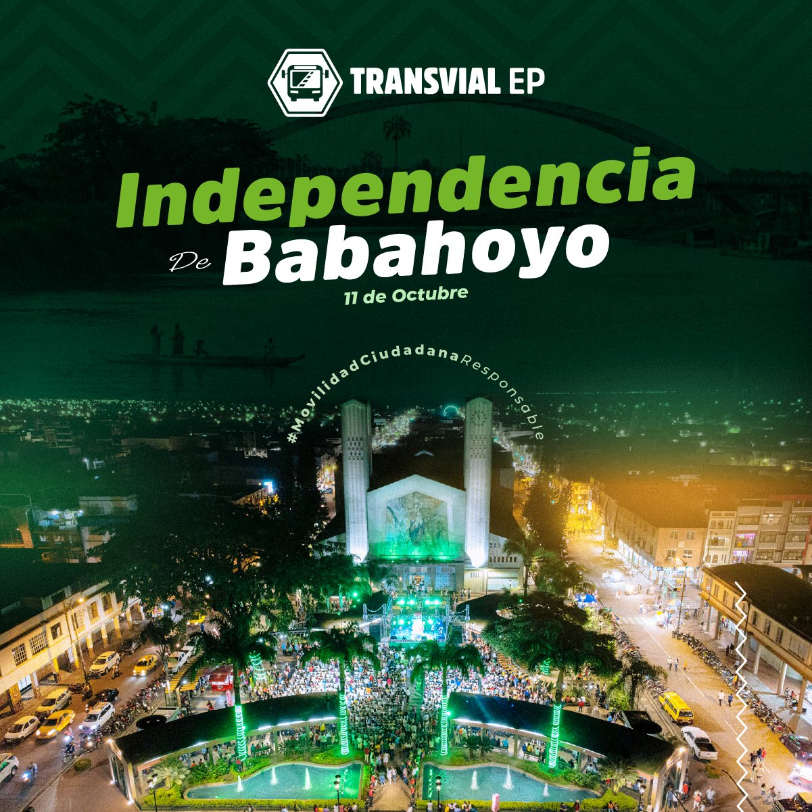
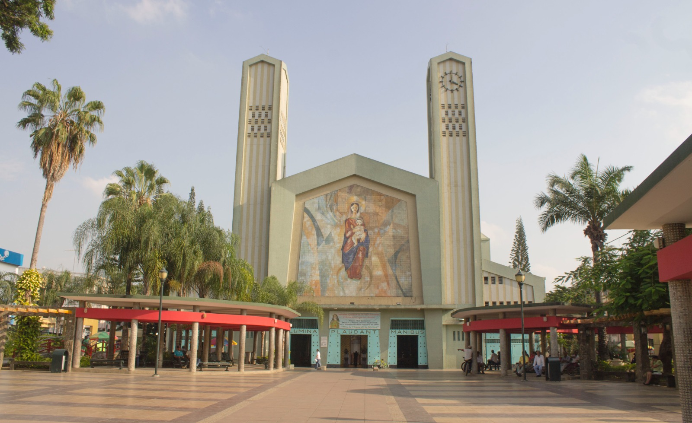

Comida y Ciudades
Las comidas típicas de la ciudad de Babahoyo, en la provincia de Los Ríos, se caracterizan por su sabor costeño y el uso de productos locales como el plátano verde, el maní y el pescado de río. Entre sus platos más representativos están el bollo de pescado, preparado con plátano verde y albacora envuelto en hoja de plátano; la guatita, hecha con mondongo y salsa de maní; el encebollado, una sopa de pescado con yuca y cebolla encurtida; y el seco de gallina criolla, acompañado de arroz y patacones
Arroz Con Menestra

1. Para preparar la menestra, remoje las lentejas desde la noche anterior. Al día siguiente, cocínelas en una olla con suficiente agua hasta que estén blandas.
2. Aparte, en una olla, prepare un refrito con achiote, cebollas y ajo, hasta que estos estén transparentes.
3. Incorpore el tomate y cocine por cinco minutos más. Añada la lenteja con su líquido, el plátano rallado, sazone con sal, pimienta y cocine hasta que se reduzca el agua y se espese un poco.
4. Aliñe la carne con sal, pimienta, comino y ajo. Deje reposar dos horas y ase al carbón o la a plancha, hasta dorar.
5. Sirva la menestra con carne, arroz blanco y acompañe con maduros fritos.

Se elabora principalmente con masa de plátano verde rallado y pescado, tradicionalmente albacora o bocachico, envuelto en hojas de plátano y cocido al vapor. El bollo se acompaña con una salsa de maní, cebolla curtida, ají y limón, lo que le da un sabor suave y sabroso. Es un plato muy representativo de la costa ecuatoriana, especialmente en Babahoyo, donde se disfruta como desayuno o almuerzo, y es parte esencial de su identidad culinaria.

La independencia de la ciudad de Babahoyo se conmemora cada 9 de octubre, en honor al año 1820, cuando sus habitantes se unieron al movimiento independentista iniciado en Guayaquil. Aunque Babahoyo no fue una de las primeras en proclamar su libertad, su apoyo fue clave para consolidar la independencia de la región. La ciudad, ubicada estratégicamente entre la Sierra y la Costa, fue un punto importante para el paso de tropas y recursos.

La Iglesia Matriz de Babahoyo, también conocida como la Catedral de Nuestra Señora de la Merced, es uno de los principales símbolos religiosos y arquitectónicos de la ciudad. Está ubicada frente al parque 24 de Mayo, en el centro de Babahoyo. Su estructura combina un estilo moderno con elementos tradicionales, y en su interior se encuentra la imagen de Nuestra Señora de la Merced, patrona de la ciudad. La iglesia es un lugar de encuentro espiritual para los habitantes, donde se celebran misas, procesiones y festividades religiosas.